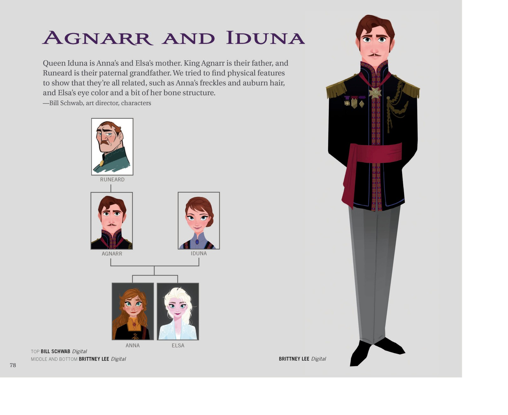

🕰️ 时间线 · 王室谱系
阿伦黛尔王室谱系
从鲁尼尔德的背叛到艾莎的觉醒 · 三代人的血脉与秘密
阿伦黛尔是一座坐落于峡湾（fjord）畔的君主立宪王国。其近代王室的核心脉络，因《冰雪奇缘 2》(F2) 的揭密而向前延伸了一代：鲁尼尔德国王并非艾莎、安娜的父辈，而是她们的祖父；而母亲伊杜娜（Iduna）的真实身份，则把王室与北境之民（Northuldra）紧紧系在一起。这条血脉里流淌着背叛与救赎、隔离与连接、恐惧与爱——三代人的选择，共同塑造了《冰雪奇缘》的整个故事。

家族谱系手稿设计师在姐妹身上寻找遗传线索——安娜的雀斑与赤褐发、艾莎的眼色与骨骼，都从这份族系稿里隐约可见。
👑 王室谱系树
⚔️ 鲁尼尔德国王
King Runeard · 建国君主
阿伦黛尔建国者
北境之役中坠崖身亡
⚠️ 背叛者 / 迷雾制造者
❤
👑 无名王后
Runeard's Queen · 姓名未披露
仅于 F2 闪回短暂出现
怀抱幼年阿格纳尔
⚠️ 官方留白
👑 阿格纳尔国王
King Agnarr · 第二代
鲁尼尔德之子
北境之役中被伊杜娜救出
与伊杜娜同葬于暗海
❤
👑 伊杜娜王后
Queen Iduna · 北境之民出身
北境女孩，救下阿格纳尔
身份被隐瞒，以「南方孤儿」入宫
《All Is Found》摇篮曲演唱者
❄️ 艾莎女王
Queen Elsa → 第五灵
长女，生于冬至（约前21年）
F1 时 21 岁即位
F2 觉醒为第五灵，留驻北境
✨ 天生冰雪魔法
🌻 安娜女王
Queen Anna · 第三代君主
次女，生于夏至（约前18年）
F1 时 18 岁
F2 中继承阿伦黛尔王位
✨ 没有魔法，但有「无条件的爱」
📋 王室成员详表
| 世代 |
人物 |
身份 / 头衔 |
关键事迹 |
结局 / 状态 |
| 第一代 | 鲁尼尔德国王
King Runeard | 阿伦黛尔建国君主 | 以「和平礼物」之名修建水坝削弱北境；杀害北境首领；挑起两族血战 | 北境之役中坠崖身亡
其罪行在 F2 被揭露 |
| （配偶） | 无名王后
Runeard's Queen | 阿伦黛尔王后 | 仅于 F2 闪回中怀抱幼年阿格纳尔出现 | 姓名、生卒均未披露
⚠️ 官方留白 |
| 第二代 | 阿格纳尔国王
King Agnarr | 阿伦黛尔国王（第二代） | 幼年在北境之役中被伊杜娜救出；为寻找艾莎魔力的「治愈之水」而出海 | 与伊杜娜同葬于暗海
船只残骸在 F2 被「水之记忆」重现 |
| 第二代 | 伊杜娜王后
Queen Iduna | 阿伦黛尔王后（北境之民出身） | 北境女孩，在北境之役中救下昏迷的阿格纳尔；身份被隐瞒入宫；演唱《All Is Found》摇篮曲；其「桥梁之举」使艾莎获得第五灵天赋 | 与阿格纳尔同葬于暗海
身份在 F2 阿塔霍兰被揭露 |
| 第三代 | 艾莎
Elsa / 第五灵 | 阿伦黛尔女王（F1 即位）→ 第五灵（F2 觉醒） | 天生冰雪魔法；F1 加冕日魔法暴露，以真爱之举解咒；F2 穿越暗海抵达阿塔霍兰，发现真相后觉醒为第五灵 | F2 后留驻北境森林
成为连接人类与自然之灵的桥 |
| 第三代 | 安娜
Anna / 阿伦黛尔女王 | 阿伦黛尔公主 → 阿伦黛尔女王（F2 即位） | 童年记忆被地精抹去；F1 中追寻姐姐，以真爱之举解咒；F2 中收到艾莎传来的真相后，决定摧毁水坝以赎罪 | F2 后继承阿伦黛尔王位
成为「做下一件对的事」的女王 |
🔮 谱系中的三个「秘密与揭示」
⚔️
秘密 1
F1 观众完全不知
鲁尼尔德的真实身份
F1 的认知：鲁尼尔德从未被提及，观众以为阿格纳尔就是建国君主。
F2 的揭示：鲁尼尔德是艾莎、安娜的祖父，是阿伦黛尔的建国君主，也是北境之役的罪魁祸首——他以「和平礼物」之名修建水坝削弱北境，杀害北境首领，挑起两族血战。
叙事意义：这个揭示将 F1 的「个人成长故事」升级为 F2 的「历史纠正故事」——艾莎的魔法不是「诅咒」，而是对祖父罪行的「救赎」；安娜摧毁水坝不是「破坏」，而是「归还」。
🌿
秘密 2
F1 中被刻意隐瞒
伊杜娜的北境身份
F1 的认知：伊杜娜只是一个普通的王后，观众与安娜一样对她的出身一无所知。她唱的摇篮曲《All Is Found》只是一首「好听的歌」。
F2 的揭示：伊杜娜是北境之民（Northuldra），她在北境之役中救下了昏迷的阿格纳尔，护送他离开迷雾。她的北境身份被刻意隐瞒——她以「南方孤儿」的身份进入王室。她唱的摇篮曲不是普通的歌，而是指向阿塔霍兰的「地图」。
叙事意义：伊杜娜的身份揭示解释了艾莎魔法的来源——不是「随机的天赋」，而是自然之灵对伊杜娜「桥梁之举」的回馈。这也让「姐妹血脉」有了更深的含义——艾莎的冰魔法来自母亲的北境血脉，安娜的「连接之力」来自母亲的「桥梁之举」。
❄️
秘密 3
F2 终章才完全揭示
艾莎的第五灵身份
F1 的认知：艾莎的魔法是「诅咒」或「天赋」，她需要学会「控制」它。她是「与众不同的女王」。
F2 的揭示：艾莎的魔法不是「诅咒」也不是普通的「天赋」——她是「第五灵」（the Fifth Spirit），是连接四大自然之灵（风/火/地/水）与人类的「桥」。她的存在本身就是对鲁尼尔德罪行的「救赎」——祖父用「恐惧」切断了人类与自然的连接，孙女用「爱」重新架起了这座桥。
叙事意义：这个揭示完成了艾莎从「隐藏自我」到「接纳自我」再到「发现真我」的三级成长弧光。她不再需要「控制」魔法——她就是魔法本身。她离开阿伦黛尔不是「逃避」，而是「归位」——她终于找到了自己真正属于的地方。
🌉 血脉融合：阿伦黛尔 × 北境的象征意义
阿伦黛尔王室的谱系本质上是一条「血脉融合」的谱系——阿格纳尔（阿伦黛尔人）与伊杜娜（北境人）的婚姻，将两个被迷雾隔绝了 34 年的族群的血脉融合在了一起。这种融合不是偶然的，而是整个系列「连接」主题的最具象表达。
🏰 阿伦黛尔血脉（父系）
代表「人类文明」「秩序」「恐惧驱动的控制」。鲁尼尔德用「文明」的名义修建水坝、封锁森林、篡改历史。阿格纳尔用「保护」的名义紧闭城门、隔离姐妹。
🌿 北境血脉（母系）
代表「自然」「灵性」「与自然共生」。北境人千年以来与自然之灵和谐共处，他们的文化建立在「尊重自然」而非「控制自然」的基础上。伊杜娜的「桥梁之举」正是这种文化的体现。
❄️ 融合的产物（姐妹）
艾莎继承了北境血脉的「自然之灵」天赋（第五灵），安娜继承了阿伦黛尔血脉的「人类责任」（女王）。姐妹二人一个走向自然、一个留守人间，但她们的纽带从未断裂——这正是「血脉融合」的终极意义：两个世界不再对立，而是通过爱连接在一起。
💡 深层解读：这条谱系的真正主角不是任何一个国王或女王，而是「连接」本身。鲁尼尔德的「切断」制造了迷雾和仇恨，伊杜娜的「连接」种下了救赎的种子，艾莎的「成为桥」完成了最终的和解。三代人的选择构成了一个完整的叙事弧光——从「切断」到「连接」，从「恐惧」到「爱」，从「隔离」到「和解」。
📌 本页要点
本页是时间线卷的「阿伦黛尔王室谱系」，梳理了从鲁尼尔德国王到艾莎、安娜的三代王室血脉，以及其中隐藏的秘密与揭示。核心内容：①王室谱系树——三代七人可视化谱系（第一代：鲁尼尔德+无名王后；第二代：阿格纳尔+伊杜娜；第三代：艾莎+安娜），每人标注身份、关键事迹、结局状态；②王室成员详表——6位核心成员的详细信息表（世代/人物/身份头衔/关键事迹/结局状态），包括鲁尼尔德的背叛、伊杜娜的北境身份、艾莎的第五灵觉醒等关键信息；③谱系中的三个「秘密与揭示」——秘密1：鲁尼尔德的真实身份（F1观众完全不知，F2揭示他是祖父+建国君主+北境之役罪魁祸首，将F1的「个人成长」升级为F2的「历史纠正」）；秘密2：伊杜娜的北境身份（F1中被刻意隐瞒，F2揭示她是北境之民+救下阿格纳尔的「桥梁之举」+摇篮曲是指向阿塔霍兰的「地图」，解释了艾莎魔法的来源）；秘密3：艾莎的第五灵身份（F2终章才完全揭示，她不是「有魔法的女王」而是「连接四大自然之灵与人类的桥」，完成了从「隐藏自我」到「发现真我」的三级成长弧光）；④血脉融合的象征意义——阿伦黛尔血脉（父系，代表人类文明/秩序/恐惧驱动的控制）× 北境血脉（母系，代表自然/灵性/与自然共生）= 姐妹二人（艾莎继承自然之灵天赋走向北境，安娜继承人类责任留守阿伦黛尔，纽带从未断裂），这条谱系的真正主角是「连接」本身——从鲁尼尔德的「切断」到伊杜娜的「连接」再到艾莎的「成为桥」，三代人的选择构成了从「切断」到「连接」、从「恐惧」到「爱」、从「隔离」到「和解」的完整叙事弧光。来源：F1/F2 正片 · F2 阿塔霍兰记忆闪回 · 《Dangerous Secrets》前传小说（伊杜娜视角）· 官方设定集。